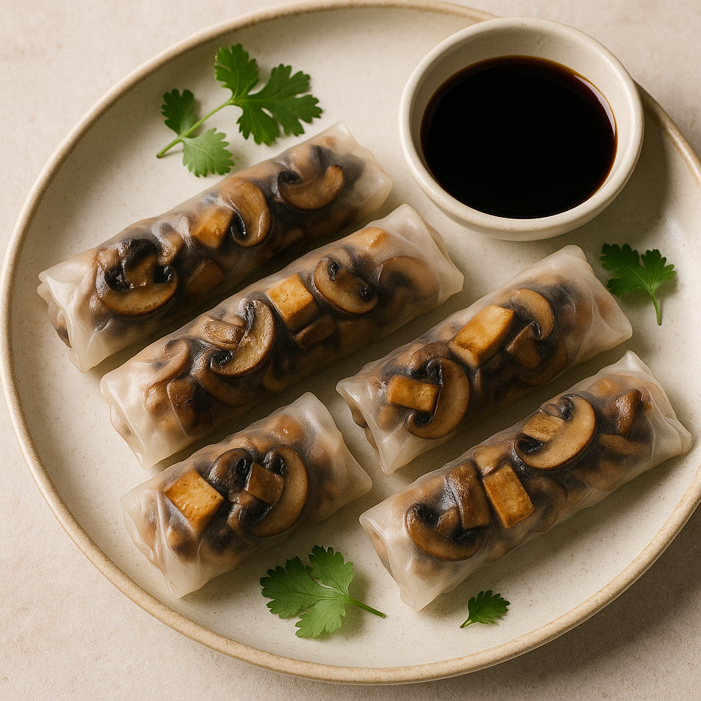

Mushroom & Tofu Rolls
Home

Description
These Mushroom and Tofu Rice Paper Rolls are a light yet satisfying plant-based dish, perfect as an appetizer or a healthy snack. Filled with savory sautéed mushrooms and golden pan-fried tofu, the rolls are wrapped in delicate rice paper that lets the vibrant ingredients shine through. Served with a rich soy or hoisin dipping sauce, they offer a delicious balance of umami flavor, tender texture, and fresh herbs in every bite. Ideal for meal prep or entertaining, these rolls are naturally vegan and gluten-free.
Ingredients
Rolls
- Olive Oil
- Shallot
- Ginger
- Red Chilli
- Garlic Clobes
- Carrot
- Chestnut Mushroom (Grated)
- Firm Tofu
- Rice Paper Wrapper
Dipping Sauce
Steps
- Gather and prepare your ingredients.
- Heat half of the olive oil in a frying pan over medium-high heat. Add the shallots, ginger, green chilli and garlic with a sprinkle of salt. Cook for 5-6 minutes until softened.
- Add the carrots and mushrooms and cook for 10-12 minutes, stirring occasionally, until reduced and all of the liquid from the mushrooms has evaporated.
- Finally add the grated tofu and cook for 4-5 minutes until the liquid has evaporated. Turn off the heat and allow to cool completely. Taste the mixture and add salt to suit your preference.
- Quickly dip a rice paper wrapper into a shallow bowl of water. Place onto a board and fill with fillings. Wait for 45-60 seconds until the wrapper has absorbed the liquid and become malleable. Fold in the sides, then tightly roll, tucking in the edges as you go. Repeat until all of the filling has been used up.
- Heat the remaining olive oil in a frying pan over medium heat. Add the rolls and cook for 4-5 minutes, until golden brown and crispy. Turn over and cook for 3-4 minutes on the other side. Repeat using the remaining oil and spring rolls until they are all used up.
- Add the sweet chilli to a bowl for the dipping sauce.
- Serve the spring rolls with dipping sauce. (You might want to consider giving each person a small, individual bowl of dipping sauce as things can get messy).